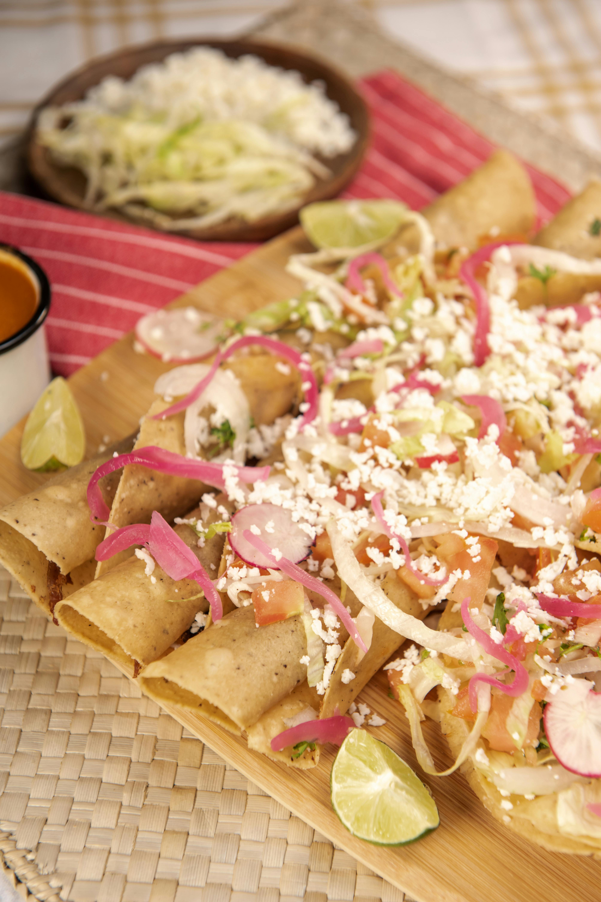

Delicious Bites Menu
Entrées
-
Salade Caprese: Tomates fraîches, mozzarella et basilic arrosés d'un glaçage balsamique.

-
Bruschetta: Pain grillé garni de tomates hachées, ail et basilic frais.
-
Gougères: Petits choux au fromage servis chauds.

-
Soupe du jour: Une soupe fraîchement préparée avec des légumes de saison.
-
Rouleaux de printemps: Rouleaux légers garnis de légumes croquants et servis avec une sauce au soja.

Plats Principaux
-
Saumon grillé: Filet de saumon assaisonné et grillé à la perfection, servi avec une sauce au beurre citronné.

-
Poulet au citron: Blanc de poulet mariné, rôti et servi avec des légumes de saison.
-
Pâtes Primavera: Pâtes fraîches avec des légumes de saison et une sauce légère à l'ail.
-
Risotto aux champignons: Risotto crémeux parfumé aux champignons sauvages et au parmesan.

-
Bœuf Bourguignon: Ragoût de bœuf mijoté au vin rouge avec des carottes et des oignons.

Desserts
-
Fondue au chocolat: Assortiment de fruits et de guimauves servis avec une riche fondue au chocolat.

-
Tarte Tatin: Tarte aux pommes caramélisées servie tiède avec de la crème fraîche.
-
Mousse au chocolat: Mousse légère et aérienne au chocolat noir, garnie de crème fouettée.
-
Crème brûlée: Crème vanillée recouverte d'une fine croûte de sucre caramélisé.

-
Cheesecake au citron: Cheesecake crémeux avec une touche de citron, servi sur une croûte biscuitée.

Contactez-nous pour les réservations